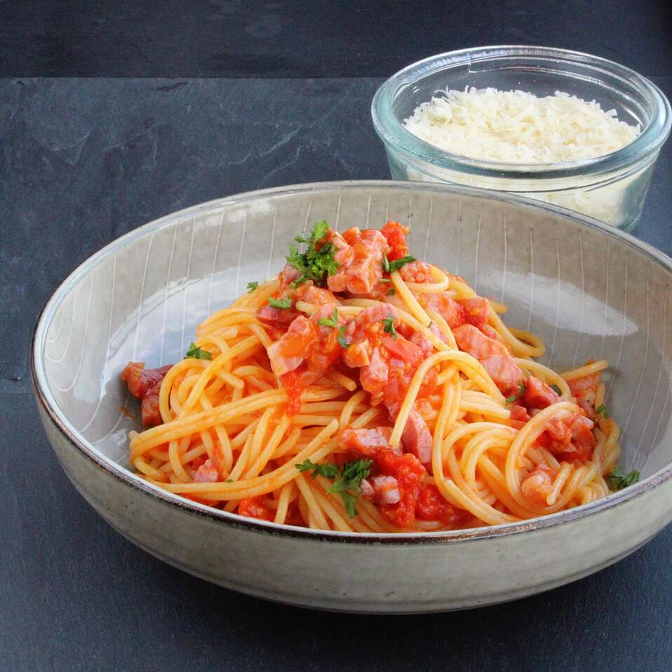

Traditional Spaghetti all'Amatriciana Recipe

Description
This classic Roman pasta dish is quick and easy to make with few ingredients. Traditionally, guanciale is used, but I prefer pancetta.
Ingredients:
- 1 pound spaghetti
- 3 tablespoons extra-virgin olive oil, divided, or more if needed
- 1 onion, finely chopped
- 7 ounces pancetta bacon, diced
- 2 cups passata (crushed tomatoes)
- 1 tablespoon water, or more as needed
- ½ teaspoon white sugar
- 2 tablespoons grated Parmesan cheese
- 1 pinch red pepper flakes, or to taste
- salt and freshly ground black pepper to taste
Steps
- Bring a large pot of lightly salted water to a boil. Cook spaghetti in the boiling water, stirring occasionally, until tender yet firm to the bite, about 12 minutes.
- Meanwhile, heat 2 tablespoons olive oil in a large skillet over medium heat and cook onion until golden brown, about 5 minutes. Add pancetta and cook, stirring occasionally, until crisp, 2 to 3 minutes. Pour in passata, water, and sugar; cook until sauce has thickened, 10 to 15 minutes
- Drain spaghetti and toss with sauce, remaining olive oil, Parmesan cheese, and red pepper flakes. Season with salt and pepper.